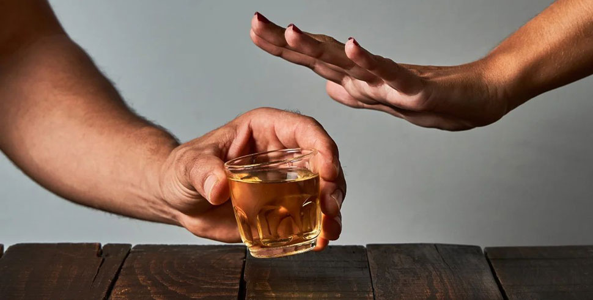

Als Suchtmediziner behaupte ich, dass jeder mit dem Trinken aufhören kann.
Seit über 20 Jahren arbeite ich als Suchttherapeut in einer großen Klinik. Während meiner Praxis konnte ich einer großen Anzahl von Menschen im Kampf gegen die Sucht helfen. Ich habe buchstäblich vielen Menschen das Leben gerettet, und ich hätte nie gedacht, dass mein Sohn einmal dazugehören würde. Lange Zeit war ich nicht in der Lage, ihm auf die Weise zu helfen, die ich kannte, und ich hatte die Hoffnung schon fast aufgegeben. Es ist mir gelungen, eine neue Methode zu finden. Jetzt möchte ich jedem erzählen, wie man von der Sucht loskommt und nie wieder zum Alkohol zurückkehrt.

Rückblickend sehe ich, dass die Klinik, die Patienten, die Seminare und Kongresse wichtiger waren als meine eigene Familie. Ich gab mich ganz anderen Menschen hin und vergaß dabei mein eigenes Leben. Vielleicht ist mein Sohn deshalb mein Patient geworden - aus dem unbewussten Wunsch heraus, mir näher zu kommen. Schwierigkeiten in der Familie und Uneinigkeit zwischen nahestehenden Personen sind einer der Hauptgründe für Alkoholismus. Und erst danach kommen Probleme mit Arbeit, Geld, Beziehungen, psychologische und physiologische Auffälligkeiten.
Meine Frau und ich haben alles getan, um meinem Sohn eine gute Ausbildung und ein anständiges Leben zu ermöglichen. Erst jetzt wird mir klar, dass es ihm an Kommunikation mit mir mangelte. Im College probierte er Alkohol aus und konnte nicht aufhören. Anfangs gelang es ihm, sein Alkoholproblem zu verbergen...
Ich erinnere mich an den Tag, an dem sie mich anriefen und mir die Augen öffneten. Bis vor sechs Monaten war mein Sohn von der Schule verwiesen worden und er fing an, jeden Tag zu trinken. Und weiter den Hang hinunter - Freundinnen-Dumping, betrunkene Kneipenschlägereien, unmoralisches Verhalten und die ersten Probleme mit dem Gesetz. Und all das habe ich nicht gewusst und nicht einmal geahnt...

Es lagen zwei Jahre der schwierigen Rehabilitation vor uns. Ich habe alles getan, um ihm zu helfen. Mein Sohn unterzog sich einer Behandlung, Blutreinigung, Psychotherapiekursen. Nach einer Weile trat eine spürbare Verbesserung ein. Er würde entlassen werden und direkt in die Bar gehen. Das Schlimmste war nicht der Spott der Leute, dass ich eine schlechte Drogentherapeutin war und meinen eigenen Sohn nicht heilen konnte, sondern dass ich wirklich machtlos war und mein Kind sich jeden Tag vergiftete und sein Leben ruinierte.
Mit der Zeit half der Psychologe, unsere Beziehung zu verbessern. Mein Sohn hat zugegeben, dass er nicht mehr wütend auf mich ist. Es ist nur so, dass das Aufhören mit dem Trinken für ihn nicht möglich ist. Es war, als würde ihn jemand dazu zwingen und er konnte nicht aufhören. Das Problem war also kein psychologisches, sondern eine körperliche Abhängigkeit, von der er nicht loskam. Natürlich wusste ich, dass das passiert. Traditionelle Behandlungsmethoden, die überall auf der Welt praktiziert werden, halfen nicht ... Also begann ich, nach einer anderen Methode zu suchen, die sich von allen anderen unterscheidet

Bei einer der Online-Konferenzen war der letzte Redner ein mir bis dahin unbekannter Drogentherapeut zu dem Thema, das ich suchte. Das neue Mittel, das außergewöhnliche statistische Daten zur Heilung von Alkoholismus gezeigt hat, wurde bereits in die Therapie in den Nachbarländern aufgenommen.
Also, was ich gelernt habe. enthält keine Blocker, Beruhigungsmittel oder andere bekannte Substanzen. Es enthält natürliche Extrakte, die die Hauptfunktionen in der Alkoholabhängigkeitstherapie erfüllen:
- eine natürliche Abstoßungsreaktion auf Alkohol hervorrufen;
- Verbesserung der Denk- und Sprachfunktionen;
- Entzugserscheinungen lindern;
- Verbesserung des emotionalen Zustands, Beseitigung von Anzeichen von Aggression und Depression;
- reinigen das Blut und die Blutgefäße;
- Giftige Substanzen aus dem Körper entfernen
Als Fachmann mit recht langer Erfahrung war es für mich schwer zu glauben.Dieser Effekt kann durch kein einzelnes Medikament, sondern nur durch umfassende Arbeit erreicht werden. Da ich alle bekannten Methoden ausprobiert hatte und sie nicht halfen, beschloss ich, meinem Sohn zu geben.
Mein Sohn ist seit zwei Wochen am Saufen. Am Morgen, um seinen Kater zu lindern, gab ich ihm . Eine Stunde später duschte er und ging zum Frühstück. Zum ersten Mal seit langer Zeit fühlte er sich nicht schlecht. In der Tat, seine Hände zitterten nicht, seine Stimme war ruhig, seine Pupillen waren normal. Keine Anzeichen eines Katers. Er hat sogar gescherzt und gelächelt, als ob er gestern nicht betrunken in einer Pfütze seiner eigenen Kotze gelegen hätte...

Nach zwei Wochen der Einnahme dieses Medikaments hatte mein Sohn keinen Zusammenbruch, sondern führte ein normales Leben. Mein Sohn wurde untersucht und seine Tests überraschten mich - alle Indikatoren waren normal, sein Blut war frei von Giftstoffen und Verunreinigungen. Und das Wichtigste ist, dass mein Sohn aufgehört hat zu trinken. Für wie lange? Es stellte sich heraus: Ja.
Eine Woche später gab er zu, dass er nicht glaubte, dass diese neue Behandlung helfen würde, er begann sie nur mir zuliebe zu nehmen. Und dann hat er einfach aufgehört zu denken, dass er trinken will. Positive Gedanken begannen zu erscheinen, der Zustand selbst wurde besser. Ich habe sogar angefangen zu planen, einen Job zu finden und nächstes Jahr wieder zur Schule zu gehen.
Es ist sechs Monate her, dass mein Sohn getrunken hat. Während dieser Zeit hat er nie Alkohol angerührt und ist zu einem normalen Leben zurückgekehrt.Jetzt helfe ich sogar denen, die ich für hoffnungslose Patienten hielt. Ich habe es geschafft, einen Vorrat an in unserem Land aufzubauen. Und noch mehr! Jetzt kann sie jeder direkt von der Website des Herstellers bestellen, ohne dass Überzahlungen oder Zollgebühren anfallen.
Wenn Sie selbst oder Ihre Angehörigen nicht von der Sucht loskommen und die Hoffnung schon fast verloren haben... Wissen Sie, dass es immer einen Ausweg gibt! Ich selbst war vor kurzem in Ihren Schuhen, obwohl ich dachte, dass dies aufgrund meiner Spezialisierung niemals passieren würde. Es gibt alle Arten von Umständen im Leben. Ich weiß, wie viel die Leute für eine Reha ausgeben. In den meisten Fällen liegen solch große Summen außerhalb der Reichweite von 85% der Patienten. Ich möchte allen helfen und gebe 50% Rabatt auf . Mit dem Kauf dieses Mittels werden Sie dem Alkohol für immer Lebewohl sagen.